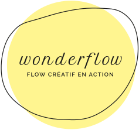
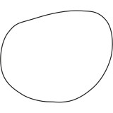

Écouter. Créer.
Temps de faire une pause
pour vous (re)connecter
à votre créativité
Notre environnement de travail est en pleine mutation avec une demande croissante en agilité et résilience. La technologie est par ailleurs omniprésente et malgré tous ses avantages, elle peut être oppressante. Ces intrusions incessantes étouffent la conscience et bloquent le flow de la créativité.
La reconnexion à soi est essentielle. Elle favorise la créativité qui, par son épanouissement et son expression, contribuera au futur de l’entreprise et à créer du sens dans nos vies professionnelles.

Wonderflow

Des ateliers ludiques et originaux pour
enforcer votre confiance créative dans votre milieu professionnel. Abordez la créativité
différemment!
Découvrez notre approche
Les ateliers Wonderflow s'adressent à tout gestionnaire ou leader qui souhaite développer sa confiance créative.
pour qui?
Se (re)connecter à sa créativité.
Apprendre des stratégies pour faire émerger de nouvelles idées et
des solutions à vos problématiques.
Repartir avec des outils pour faire de sa créativité un état
d'esprit quotidien.
Découvrez
nos ateliers expérientiels
Créativité et intuition
Créativité au quotidien
Créativité et courage
Et si vous faisiez une "pause" Wonderflow?
Cette pause en mouvement va vous permettre une connexion avec votre espace intérieur, votre créativité, vous donner des clés pour un quotidien plus créatif et qui sait… une prise de conscience, une meilleure connaissance de vous-même, un déclic, un éclair de génie!